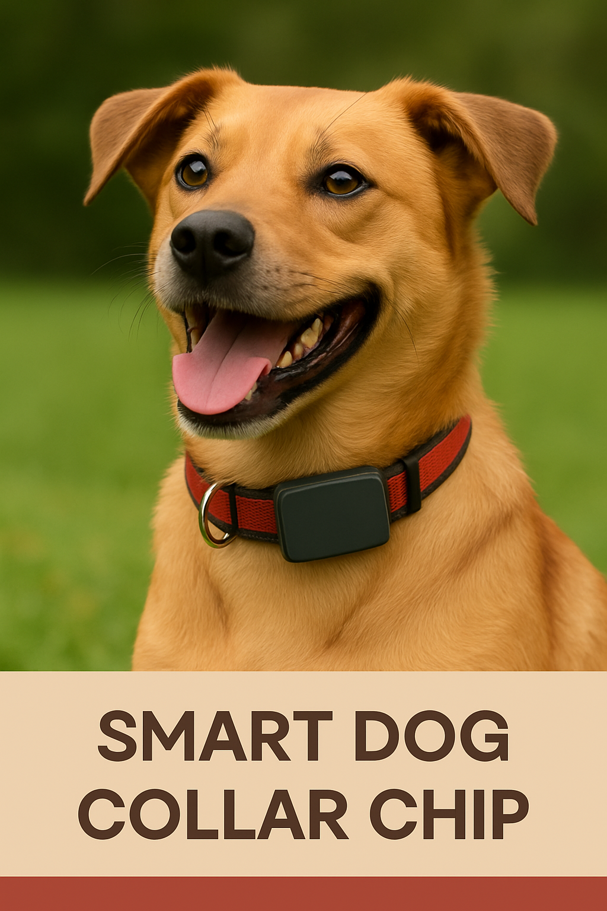

IoT chip for dog collars — case study

The Canine Beacon project consists of a compact IoT chip designed to attach to a dog collar. It provides real-time GPS tracking, audio monitoring through MEMS microphones, temperature sensing, and low-power operation for extended battery life. This case study walks through the full development process from concept to PCB assembly.
Defined functional requirements: GPS sensitivity, audio detection, temperature monitoring, battery life, and water resistance (IP67).
Built a prototype on a breadboard with GPS module and MCU. Validated satellite reception, audio sampling, and temperature reading.
Designed schematic in KiCad, selecting MCU, GPS module, MEMS microphones, voltage regulator, and USB-C connector for charging.
Created a compact two-layer PCB, optimized antenna routing, and prepared Gerber files for manufacturing.
Developed firmware for power management, GPS parsing, audio event detection, and BLE/LTE-M telemetry.
Soldered prototype PCBs, verified GPS accuracy, audio detection, battery performance, and water resistance.